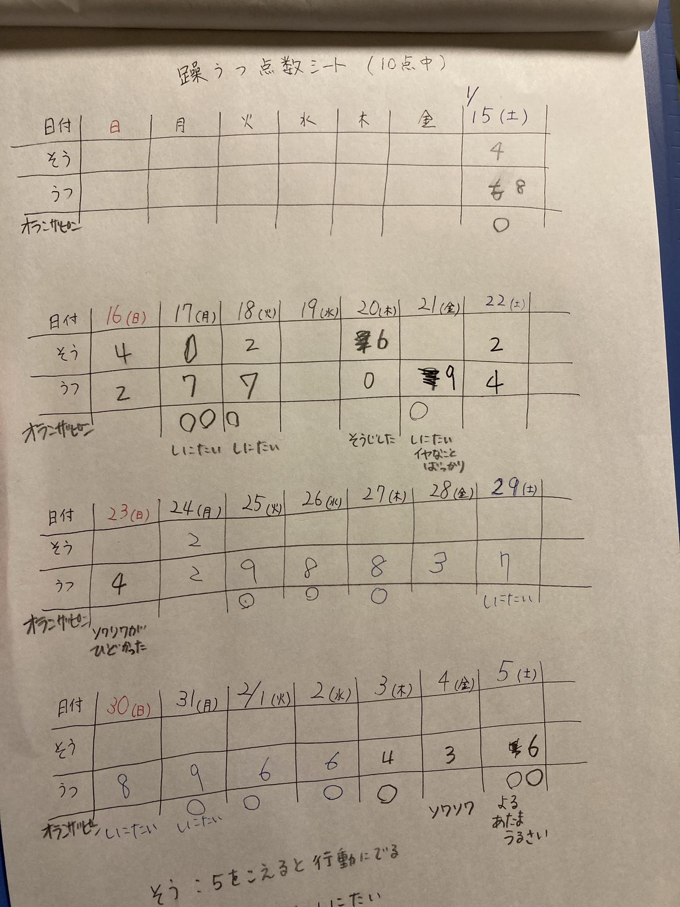

【双極性障害】躁鬱点数シートをつくってみた
生きるうつが３週間続いた。
希死念慮（きしねんりょ）で死にたいという気持ちが強くて、オランザピンを頓服で飲んでは、副作用で半日を寝て過ごした。
オランザピンを飲むと、頭がぼうっとして眠くなる。
寝てしまえば、起きた時には希死念慮はおさまっていて、調子がよくなる。
朝おきたときから死にたくて、泣いたりして、朝ごはんもろくに食べられず頓服を飲んで１５時くらいまで寝て過ごす。そんな毎日だった。
医者に「なんらかの記録をつけると良い」と言われて、ためしに点数シートをつくってみた。
日付、躁の点数、鬱の点数、オランザピン（頓服）をのんだかどうか、の欄をつくる。
点数は１０点満点で、５点を超えると感覚的にアウト。自分でどうにもならない。１０点に近づくほど危険になる。
私は手書きにしたが、エクセルなどで作れば、グラフ化もできると思う。
医者にもどんな変化をしているか、言葉で説明するよりもわかりやすいかもしれない。
とりあえずしばらく続けてみようと思う。